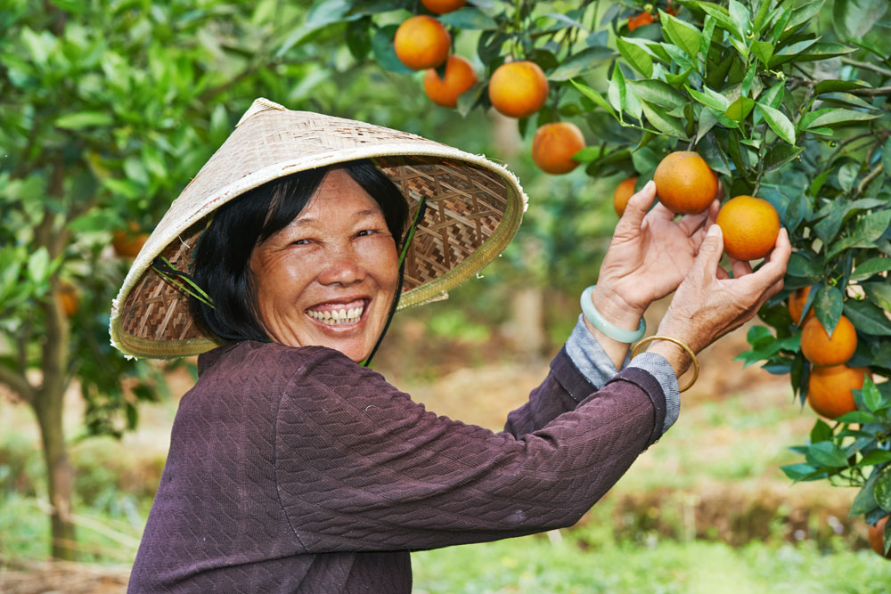
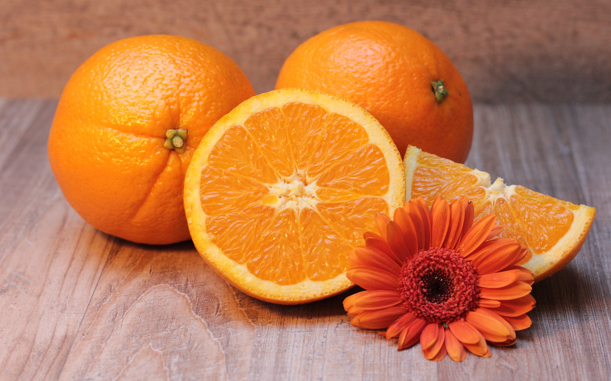
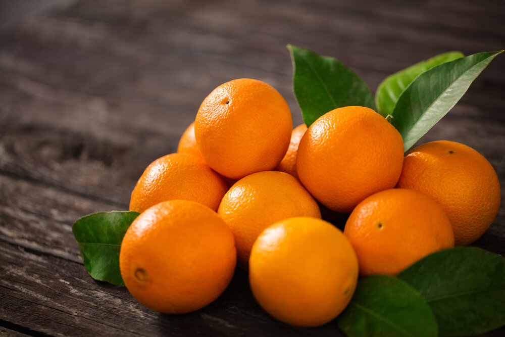
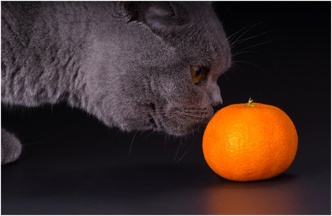

Происхождение апельсина
 Апельсин – один из самых любимых и популярных фруктов. Он сочетает яркий цвет, приятный вкус и множество ценных пищевых элементов, которые помогают сохранить бодрость в течение долгой зимы. Апельсин – вечнозеленое фруктовое дерево, которое обитает в тропиках и субтропиках. Яркий цвет его плодов напоминает о солнце и жарком лете. Происхождение растения – Китай. Считается, что именно там 4,5 тысячи лет назад древние селекционеры скрестили помело и мандарин. Они первыми начали культивировать деревья, которые распространились по всему миру.
Немного о полезных свойствах
 О полезных свойствах апельсина ходит множество легенд, часть из которых, однако, ничем не подтверждается. Например, одни считают, что апельсин бьёт все рекорды по содержанию витамина С, хотя на самом деле он по этому параметру не выделяется среди прочих цитрусовых. Другие уверены, что апельсиновые плоды (или свежевыжатый сок) способны эффективно сжигать жиры и обеспечивать избавление от лишних килограммов в диетах. Это тоже не совсем так.
 Тем не менее, апельсин действительно полезный продукт, способный лечить астму и нейродегенеративные заболевания, подавлять активность ряда бактерий, улучшать состояние при сахарном диабете и болезнях печени, снижать артериальное давление и положительно влиять на сердечно-сосудистую систему. Вот только при введении апельсина в рацион нужно всегда учитывать и опасные свойства продукта, который в сочетании с лекарствами может спровоцировать непредсказуемый эффект.
Состав
Мякоть содержит от 6 до 15% сахаров, пектины, лимонную кислоту. В 100 граммах съедобной части зрелого плода примерно: 
- 0,3 мг железа
- 197 мг калия
- 13 мг магния
- 23 мг фосфора
- 34 мг кальция
- 6 мг кремния
Апельсины богаты витамином C. Один плод средних размеров обеспечивает примерно половину суточной потребности в аскорбинке. Также присутствуют полиненасыщенные жирные кислоты, витамины B1, B2, B4, B5, B6, B9, E, H, PP, растительный белок. Цедра – источник натурального эфирного масла. В цедре присутствуют сахара, пектины, витамин P. Химический состав меняется в зависимости от региона, погодных условий, климата, сорта и степени зрелости.